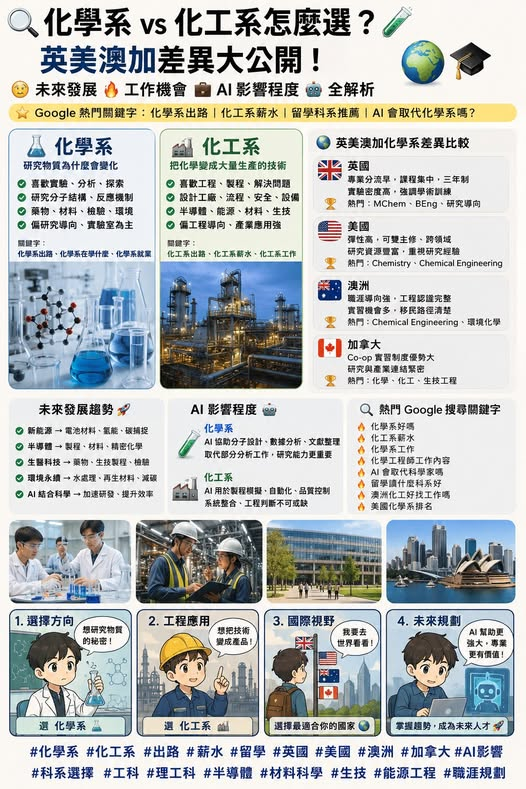

《看懂制度，選對世界》第一集
化學系 vs 化工系：差一個字，人生路線差很多
很多高中生填志願時，看到 和 其實這兩個科系的養成方向，差距很大。化學系偏向研究物質、分子、反應與分析。化工系偏向把反應放大成製程，進入半導體、能源、材料、藥廠與工業系統。一個比較像科學研究。一個比較像工程應用。

【 vs 】 很多高中生填志願時，看到 和 其實這兩個科系的養成方向，差距很大。化學系偏向研究物質、分子、反應與分析。化工系偏向把反應放大成製程，進入半導體、能源、材料、藥廠與工業系統。一個比較像科學研究。一個比較像工程應用。如果把一瓶新材料從實驗室帶到產業端，化學系負責找出可能性，化工系負責讓它變成大量生產的產品。. 化學系的核心是物質本身。學生會接觸 有機化學 無機化學 物理化學 分析化學 生物化學 材料化學 儀器分析 實驗設計 化學系最常訓練的是觀察、推理、分析與驗證。
你會思考 這個分子為什麼會產生反應 這個材料為什麼具備特殊性質 這個藥物分子能否產生效果 這個食品、藥品、水質或環境樣本是否合格 所以化學系畢業後，常見方向包含 藥物研發 材料研發 半導體材料 食品檢驗 環境檢測 化妝品研發 法醫鑑識 實驗室分析 研究助理 教學與研究所深造 如果學生想走研發、新藥、新材料、AI 化學、計算化學，研究所通常會加分很多。. 化工系的全名是化學工程。它把化學、物理、數學、工程設計、能源與產業製程放在一起訓練。
學生會接觸 工程數學 熱力學 流體力學 質量傳遞 熱傳 反應工程 程序控制 製程設計 工廠安全 能源工程 材料工程 化工系關心的是 一個反應如何大量生產 一條產線如何設計 一個製程如何節能 一座工廠如何兼顧安全、效率與成本 一個材料如何進入半導體、電池、藥廠、生技或能源產業 所以化工系畢業後，常見方向包含 半導體製程工程師 製程整合工程師 材料工程師 石化工程師 能源工程師 電池產業 藥廠製程 生技製程 環保工程 食品製程 品質工程 製程安全 在台灣，化工背景跟半導體、材料、能源、生技、石化產業連動很高，職涯路線相對明確。
. 英國、美國、澳洲、加拿大怎麼選 英國本科通常三年，專業進入速度快。讀 Chemistry 的學生，會很快進入有機、無機、物化、分析、材料等核心訓練。許多大學提供 MChem 四年制，適合想走研究、博士、藥物化學或材料化學的學生。Chemical Engineering 常見 BEng 三年與 MEng 四年。若未來想在英國走工程師路線，課程認證與專業資格很重要。
適合學生 目標明確 想快速進入專業 偏好短年限學制 想銜接英國碩士或博士 . 美國四年制彈性高，學生可以搭配資料科學、生物、醫學預科、材料、環境、電腦科學。化學系可以走 藥物化學 生物化學 計算化學 材料科學 環境化學 AI 化學 化工系也常跟生醫工程、能源、半導體、奈米科技、材料科學連結。適合學生 還想探索方向 想雙主修或副修 想做大學部研究 未來考慮研究所、醫學院、生技或科技產業 . 澳洲理學本科常見三年，工程多為四年。化學系可以接食品、藥物、環境、材料、教育與研究。
化工系常與能源、礦業、環境、製程、材料、生技產業連結。澳洲工程職涯與 Engineers Australia 認證關係密切，想走工程師路線的學生，選校時要留意課程認可狀況。適合學生 重視產業連結 對能源、環境、礦業、生技、工程有興趣 未來考慮澳洲就業或技術移民 . 加拿大研究型大學強，Co-op 帶薪實習制度也是一大特色。化學系常見方向包含 藥物化學 分析化學 材料化學 環境化學 生物化學 化工系則常接能源、環境工程、生物製程、食品、材料、石化、半導體與製藥。
若學生未來想在加拿大成為專業工程師，工程課程認證與 P.Eng. 路線都要提前評估。適合學生 想結合研究與實習 想累積北美工作經驗 目標加拿大研究所、就業或工程師資格 . AI 時代下，化學系與化工系會怎麼變 AI 對化學與化工的影響很大。但這代表科系消失嗎？答案是否。AI 會快速進入 分子性質預測 新藥篩選 文獻整理 實驗數據分析 材料搜尋 反應路徑建議 製程模擬 工廠自動化 預測維修 品質監控 化學系學生未來要會實驗，也要會資料分析、AI 工具、Python、機器學習、化學資料庫。
化工系學生未來要懂製程，也要懂模擬軟體、自動化、數據監控、能源管理與智慧製造。AI 會淘汰重複操作型工作，卻會放大會提問、會驗證、會整合跨領域能力的人。. 未來工作怎麼看 化學系與化工系都跟未來產業高度相關。未來最佳的組合會是 化學 × AI 化學 × 藥物 化學 × 材料 化學 × 環境永續 化工 × 半導體 化工 × 能源 化工 × 數據分析 化工 × 智慧製造 化工 × ESG 如果你想出國讀這類科系，選國家時可以這樣想 英國 專業集中，適合目標明確型學生。美國 彈性最大，適合跨領域探索型學生。
澳洲 職涯導向強，工程與產業連結明顯。加拿大 研究與 Co-op 實習優勢明顯，適合想累積北美經驗的學生。在 AI 浪潮下，理工科系會加速分化。會使用 AI 的化學人，會比傳統化學人更有競爭力。會結合數據與製程的化工人，會比單純工程執行者更有舞台。化學系與化工系，差一個字，背後是兩種思考方式。一個從分子出發。一個從產業出發。選對方向，才會讓大學四年變成未來十年的起點。. 點擊下方標籤，看更多 Peter 的深度分析